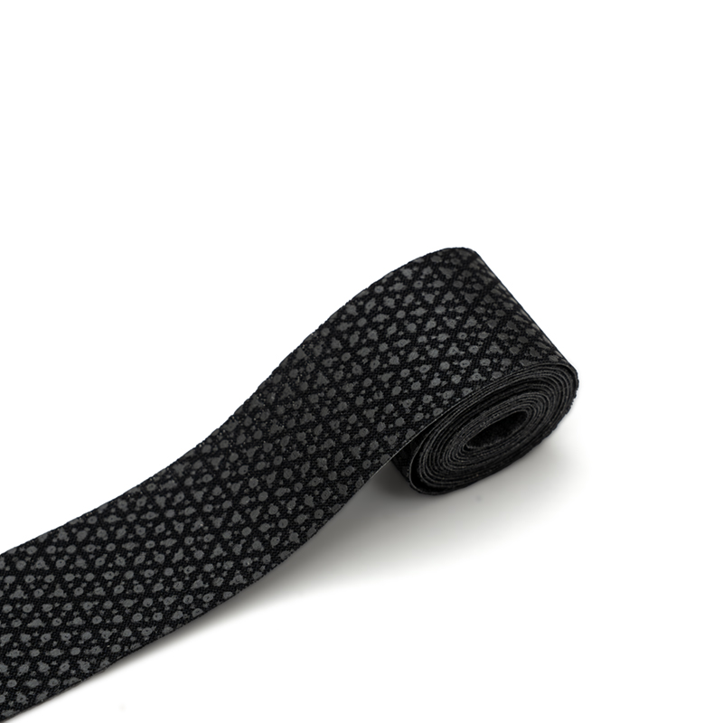
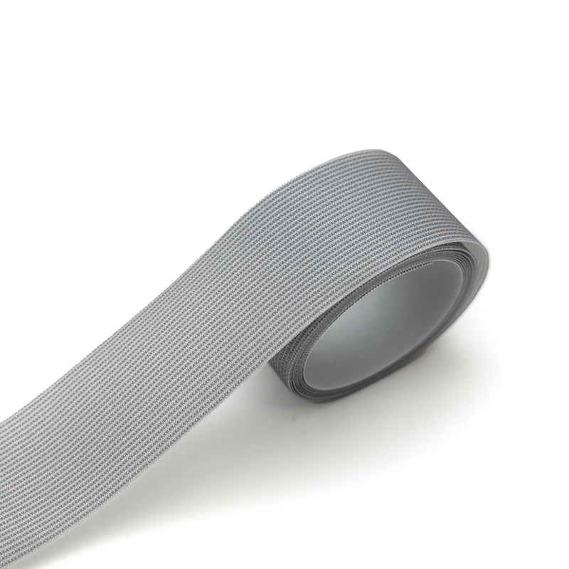
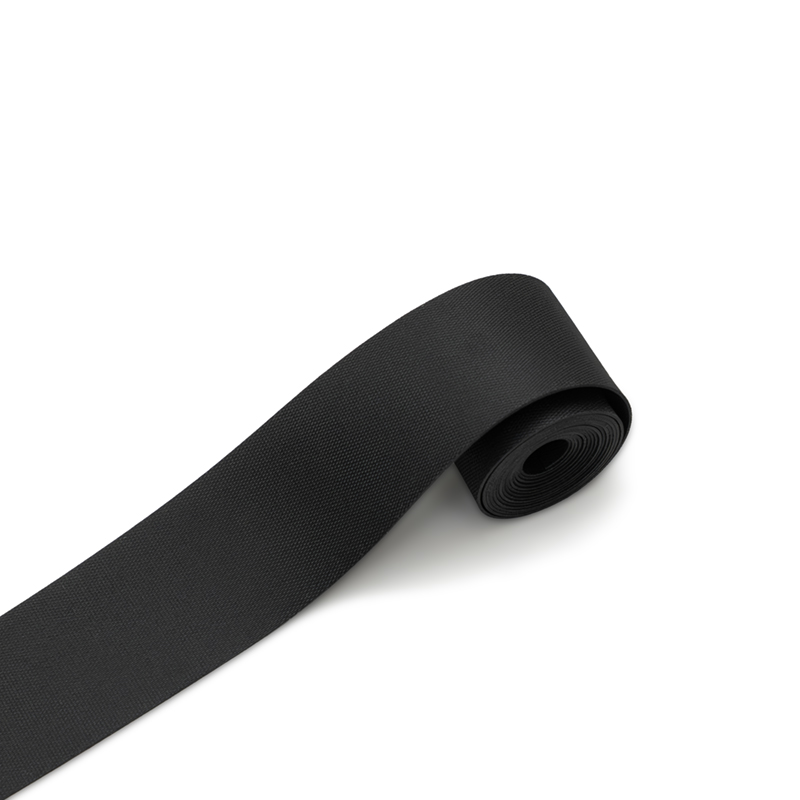
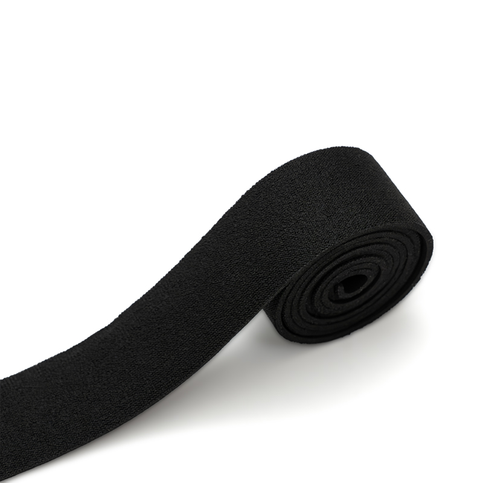
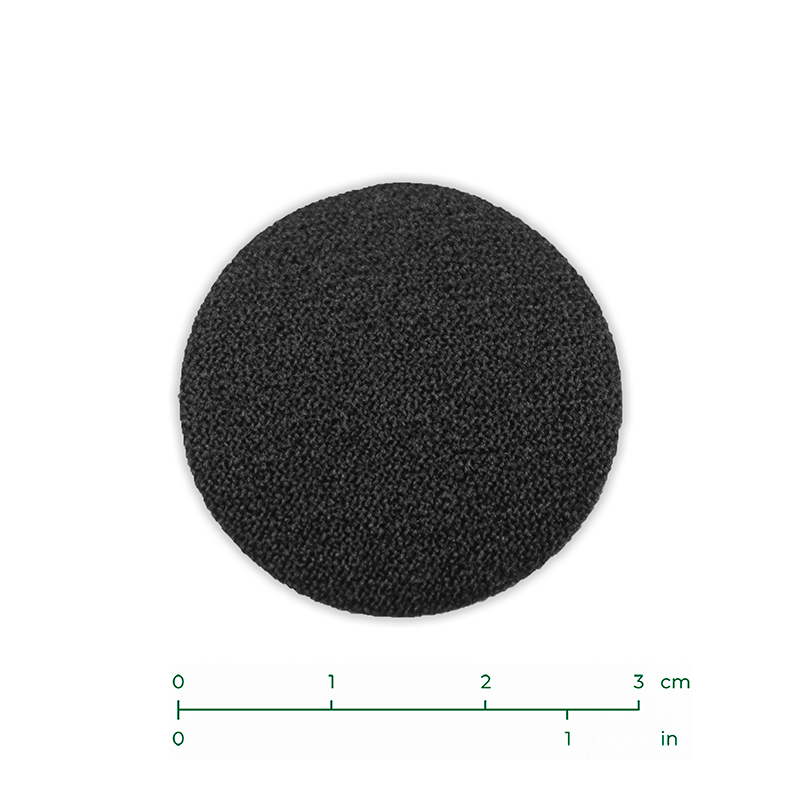
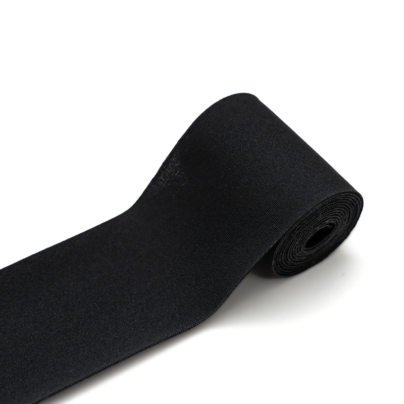
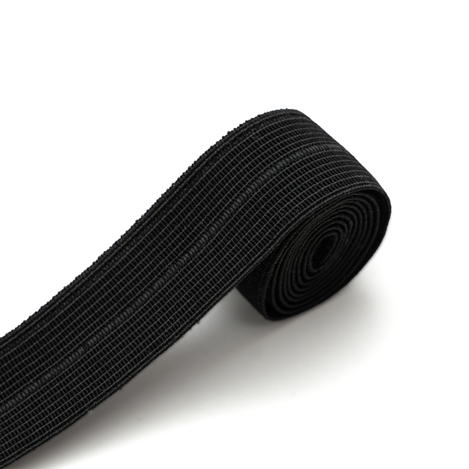

Collo Bellow
Collo Bellow in lattice di ricambio per terminale stagno di muta stagna.
Terminali stagni, scarpette, calze, tape e bordini, accessori per la costruzione e la riparazione di mute stagne. Materiali selezionati per tenuta, durata e compatibilità con i sistemi costruttivi standard.


Una muta stagna è un sistema chiuso: la tenuta dipende da ogni singolo componente. Un terminale che cede al polso, una scarpetta che si scolla, una saldatura che apre. In acqua fredda non sono inconvenienti, sono il punto in cui finisce l'immersione.
DEDEX raccoglie in un'unica linea i componenti che servono per costruire e riparare mute stagne a regola d'arte: terminali in lattice e neoprene, scarpette e calze, tape e bordini per ogni tecnica di assemblaggio, accessori. Ogni referenza è scelta per fare bene una cosa precisa, e per integrarsi con i materiali e i metodi che già usi in laboratorio.
Terminali, polsi e colli pensati per chiudere stagno e restare stagni nel tempo, immersione dopo immersione.
Componenti che lavorano con trilaminato, neoprene e tessuti tecnici, e con le tecniche di incollaggio, saldatura e cucitura più diffuse.
Dalle versioni standard alle HD ad alta densità, con un'ampia scelta di taglie, spessori e finiture per mute su misura e di serie.
Tutto ciò che serve per costruire e riparare una muta stagna, riunito in un unico catalogo tecnico. Seleziona una famiglia per esplorare le referenze.
I punti di tenuta della muta. Manicotti e collari per chiudere stagno ai polsi e al collo, in lattice naturale o in neoprene, nelle versioni standard e ad alta densità.
La parte che lavora a contatto con il fondo. Scarpette e soluzioni per il piede della muta, dal neoprene tecnico ad alta abrasione ai modelli mesh leggeri, con accessori dedicati.
Lo strato a contatto con il piede e la gamba. Calze tecniche per comfort, isolamento e vestibilità all'interno della muta stagna.

Quello che tiene insieme la muta. Nastri e bordini per sigillare cuciture e rifinire i bordi, con una soluzione per ogni tecnica di assemblaggio: termosaldatura, incollaggio del neoprene o cucitura.

I complementi che completano il lavoro. Accessori a supporto della costruzione, della manutenzione e della riparazione delle mute stagne.
52 referenze su 5 famiglie. Seleziona la famiglia; per ogni prodotto puoi richiedere informazioni e specifiche tecniche.
Collo Bellow in lattice di ricambio per terminale stagno di muta stagna.
Collo Bellow HD in lattice ad alto spessore, ricambio per mute stagne.

Collo Contour in lattice sagomato, ricambio per muta stagna.

Kit completo per riparare i colli stagni Bellow in lattice.

Kit per riparare i polsi in lattice untrimmed delle mute stagne.

Polsi in lattice profilo bottiglia per terminale di muta stagna.

Polsi in lattice profilo cono per terminale di muta stagna.

Polsi in lattice versione extended per terminale di muta stagna.

Caviglie in lattice di ricambio per terminale di muta stagna.

Calze in lattice di ricambio per terminale stagno di muta stagna.

Cappuccio in lattice di ricambio per muta stagna.
Polsi Dyno in neoprene per terminale di muta stagna.

Polsi Pyno in neoprene per terminale di muta stagna.

Collo Cyno in neoprene per terminale di muta stagna.

Scarpetta stagna Advance in neoprene 7mm per massimo isolamento.

Scarpetta stagna HD 2.0 in neoprene 5mm robusta e protettiva.
Scarpetta stagna Teccna 2.0 in neoprene 3mm leggera e flessibile.

Scarpetta stagna Quick Evo in neoprene 3mm per calzata rapida.

Rockboot Dock AT in nylon Cordura resistente all'abrasione.

Rockboot Dolly Air in neoprene 2.5mm, leggero e confortevole.

Rockboot Water Trekker 3.0 in tessuto tecnico mesh traspirante.

Fascetta per scarpe Quick Evo per una calzata piu aderente.

Soletta Safety per rockboot e scarpette stagne, comfort e supporto.
Calzari Dry Supratex in neoprene 3.0mm per muta stagna.

Calzari Dry Comfort in neoprene 3.5mm per maggiore isolamento.

Calzari Dry Run 2.0 in neoprene 3.0mm per muta stagna.

Calzari Dry Top in neoprene 3.0mm per muta stagna.

Nastro Seal Tape termosaldabile in PU per sigillatura cuciture.
Nastro Weldtape termosaldabile per sigillatura delle cuciture.
Nastro termosaldabile Melco T5500 per giunzioni impermeabili.

Nastro termosaldabile Melco T5000 per sigillatura cuciture.
Nastro termosaldabile Melco TQ5000 per sigillatura cuciture.

Nastro termosaldabile Melco TQ-2260S per giunzioni impermeabili.

Patch in Melco T5000 per riparazioni termosaldabili localizzate.

Nastro termosaldabile Polipad per sigillatura delle cuciture.

Nastro Aquatape neoprenico in CR non estruso per sigillature.

Nastro Flextape neoprenico liscio/spaccato per rifiniture.

Nastro Neotape neoprenico monofoderato per bordini e rifiniture.

Patch in neoprene monofoderato per riparazioni e rinforzi localizzati.

Nastro in Lycra®.

Nastro elastico piegato al centro da cucire per bordini.

Nastro in polipropilene semi-rigido da cucire per rinforzi.

Nastro Velcro® femmina (asola).
Nastro Velcro®.

Nastro elastico da cucire per bretelle e tiranti.
Tasca Pocket Basic applicabile per accessori subacquei.

Kit alamari per chiusura della coda di castoro.

Kit bottoni BT Clip per fissaggio della coda di castoro.

Kit bottoni a fissaggio fisso per coda di castoro.

Ginocchiere Rocky in EPDM resistente per protezione del ginocchio.

Ginocchiere HT in poliuretano ad alta tenuta per protezione.

Stencil Carichino HT in poliuretano per personalizzazione.
Una panoramica trasversale di materiali, finiture e impieghi delle cinque famiglie DEDEX.
| Famiglia | Materiali | Finiture / Versioni | Impiego | Ref. |
|---|---|---|---|---|
| Terminali Stagni | Lattice naturale · Neoprene | Standard e HD ad alta densità | Tenuta a polsi e collo | 14 |
| Scarpette Stagne | Neoprene 2.5–7mm · Cordura® · Mesh | Suola tecnica · alta abrasione | Piede della muta, uso intensivo | 9 |
| Calze Stagne | Neoprene 3.0–3.5mm · Supratex | Spessori e coperture multiple | Strato interno, comfort termico | 4 |
| Tape e Bordini | PU · Melco · Neoprene CR · Elastici | Termosaldabili · neoprenici · da cucire | Sigillatura cuciture e bordatura | 18 |
| Accessori | EPDM · Poliuretano · Tessuto | Ginocchiere · tasche · kit chiusura | Costruzione e riparazione | 7 |
DEDEX è la linea dedicata ai componenti per mute stagne: terminali, scarpette, calze, tape, bordini e accessori riuniti in un unico catalogo tecnico, pensato per chi le mute le costruisce e le ripara di mestiere.
Dietro la selezione c'è oltre un terzo di secolo di esperienza nei materiali tecnici per gli sport d'acqua. È da questo lavoro che nasce il criterio con cui ogni referenza entra a catalogo: tenuta, durata e compatibilità con i metodi di assemblaggio reali, verificate prima di tutto sul campo.
DEDEX non è un marchio consumer. È uno strumento di lavoro per produttori, laboratori di riparazione, diving center e sub tecnici che hanno bisogno del componente giusto, disponibile, con specifiche chiare.
Tutto su catalogo, prodotti e modalità di richiesta.
Compila il form per richiedere informazioni, disponibilità, condizioni B2B o specifiche tecniche sui componenti DEDEX. Il nostro reparto commerciale ti ricontatta direttamente.
Terminali, scarpette, calze, tape e bordini, accessori. Scrivici tramite il form: ti rispondiamo con disponibilità, condizioni e specifiche tecniche complete.